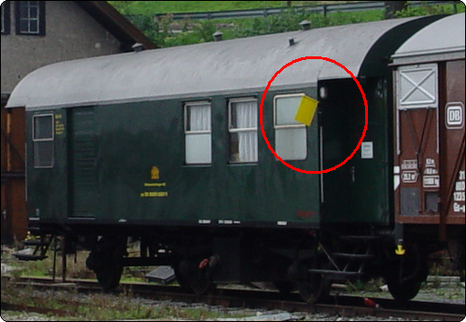

Signalbuch-Online
Signal Fz 2 – Gelbe Fahne
Informationen zur Kennzeichnung von Wagen, die während eines Stilllagers mit Personal besetzt sind.
01
Bedeutung
Kennzeichnung von Wagen, die während eines Stilllagers mit Personal besetzt sind.
02
Beschreibung
Tageszeichen:
An jeder Langseite des Wagens eine gelbe Fahne oder gelbe Tafel.
Nachtzeichen:
Das Tageszeichen; außerdem der Wagen nach außen erkennbar im Innenraum beleuchtet.
An jeder Langseite des Wagens eine gelbe Fahne oder gelbe Tafel.

Nachtzeichen:
Das Tageszeichen; außerdem der Wagen nach außen erkennbar im Innenraum beleuchtet.
03
Gültigkeit
Das Signal wird geführt, solange sich die Wagen nicht im Zuge befinden.
04
Anbringung
Das Signal wird vom Personal der Wagen angebracht.